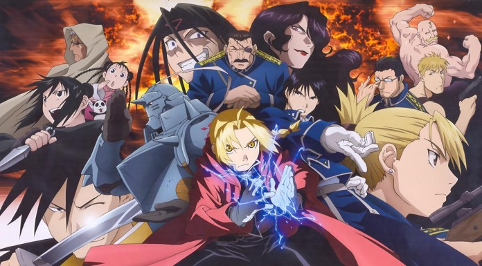

Melhores Animes Shounen de ação !!
Naruto Shippuden
Há doze anos, uma Raposa de Nove-Caudas apareceu de repente. Os movimentos de suas caudas esmagavam montanhas, causando maremotos que destruíam a costa. Os ninjas se juntaram para defender sua aldeia. Um shinobi enfrentou a Raposa de Nove-Caudas num combate mortal, ele sacrificou sua vida para derrotar a besta e selar seu espírito dentro de um corpo humano. Esse ninja era conhecido como o Quarto Hokage. Naruto Shippuden é a segunda parte do anime Naruto, que adapta a continuação do mangá original escrito por Masashi Kishimoto e consiste em 500 episódios ao todo. Ambientada dois anos após os eventos da série original, Shippuden acompanha o ninja adolescente Naruto e seus aliados. Naruto retorna a Aldeia da Folha (Konoha), depois de passar os últimos tempos treinando com um dos três ninjas lendários: Jiraiya. Sasuke fugiu da Aldeia da Folha para se juntar a Orochimaru e matar seu irmão, Itachi Uchiha. Enquanto isso, Akatsuki começa a recrutar demônios, tendo como primeiro alvo Gaara da Aldeia da Areia. Por sua vez, Naruto decide tentar convencer Sasuke a voltar para casa mais uma vez, mas encontrando o dobro de inimigos no caminho e tendo que conquistar o respeito da Aldeia à medida que a protege. Apesar de existir a possibilidade de paz, o destino da Aldeia da Folha corre perigo.
HunterXHunter
A série conta a história de Gon Freecss, um garoto de 12 anos que pretende se tornar um Hunter, um caçador de tesouros, lugares perdidos e criaturas estranhas. Contudo, ao contrário da maioria dos Hunters que procuram fama e dinheiro, o herói da história tem uma motivação maior para querer ser um caçador – encontrar seu pai – um dos mais famosos hunters do mundo. Mas não é qualquer um que pode se tornar um Hunter. Para poder praticar essa reconhecida profissão, é necessário ter uma licença especial – e para tirá-la é preciso passar – e sobreviver – a exames com milhares de inscritos. Uma vez aprovado e com sua licença Hunter em mãos, o caçador passa a ter direito a acessar áreas restritas, informações secretas e consegue acumular facilmente uma grande fortuna de acordo com seus feitos ? incluindo ir atrás de Hunters que usam seus poderes para objetivos escusos.
Fullmetal Alchemist: Brotherhood
O anime conta a história dos irmãos Alquimistas Edward Elric e Alphonse Elric. Quando eram pequenos, foram misteriosamente abandonados pelo pai. Logo depois, a mãe ficou doente e morreu. Desde então, Edward, o irmão mais velho, passou a culpar o próprio pai pela morte da mãe. Arrasados com a morte de quem tanto amavam, tentam revivê-la, utilizando uma técnica proibida da qual tomaram conhecimento lendo um dos livros que Hohenheim Elric havia deixado em casa, sobre Alquimia. Diz a Alquimia que pode se conseguir qualquer coisa, desde que se pague o que se deseja tanto com um valor equivalente. É a lei máxima da Alquimia, a "Lei da Troca Equivalente". Existe um tabu sobrea transmutação humana que se quebrado tras consequencias a quem faz, os irmãos quebram esse tabu e tem seus corpos levados pela "VERDADE"
Damon Slayer

Demon Slayer é um anime que se passa no Japão, durante o período Taisho. Ele apresenta Tanjiro Kamado, um jovem bondoso que vendia carvão para viver, até o dia em que um demônio invade a sua casa, mata com requintes de crueldade os seus pais e amaldiçoa a sua irmã Nezuko. Transformada em um demônio, a jovem é poupada pelo irmão, que mesmo triste pelos acontecimentos, resolve se tornar um matador de demônios, buscando se vingar daquele que assassinou a sua família. Em sua jornada, Tanjiro ainda tenta encontrar meios de conseguir reverter a maldição da irmã para que ela volte a ser humana novamente.
Jujutsu Kaisen

Em Jujutsu Kaisen, a vida de um adolescente é virada de cabeça para baixo após entrar em contato com um talismã amaldiçoado. No conceituado anime, o adolescente Yuuji Itadori participa de um clube de ocultismo e acaba se envolvendo com um item perigoso, um dedo amaldiçoado. Para proteger seus colegas de um ataque das Maldições, ele engole o dedo e se torna anfitirão da Maldição. Ao invés de sofrer uma sentença de morte imediata, seu professor consegue levá-lo ao Colégio Técnico Metropolitano de Tóquio e elaborar um plano para que ele consuma todos os dedos para se tornar uma Maldição e, enfim, acabar com ela.
Solo leveling

Há mais de uma década, surgiu uma misteriosa passagem chamada 'portal', que conecta este mundo a uma dimensão diferente, o que fez com que pessoas despertassem poderes únicos… e essas pessoas são chamadas de 'caçadores'. Os caçadores usam seus poderes sobre-humanos para conquistar masmorras dentro dos portais e assim ganhar a vida. Sung Jin-woo, um caçador de nível baixo, é considerado o caçador mais fraco de toda a humanidade. Certo dia, ele se depara com uma 'masmorra dupla', que tem uma masmorra de nível alto escondida dentro de uma masmorra de nível baixo. Diante de um Jinwoo gravemente ferido, surge uma misteriosa missão! À beira da morte, Jinwoo decide aceitar essa missão, tornando-se assim a única pessoa capaz de subir de nível!.